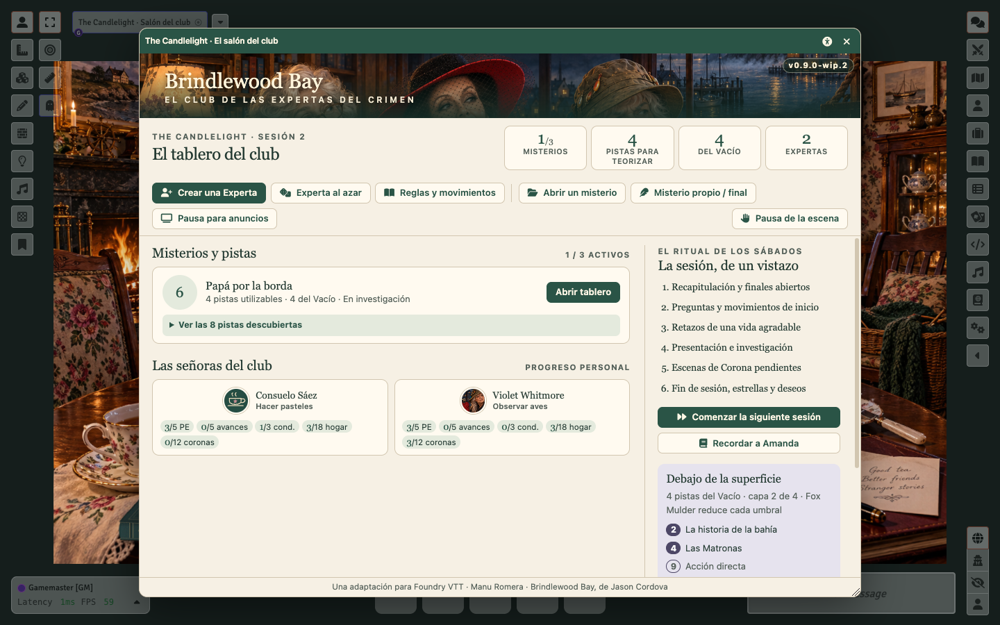
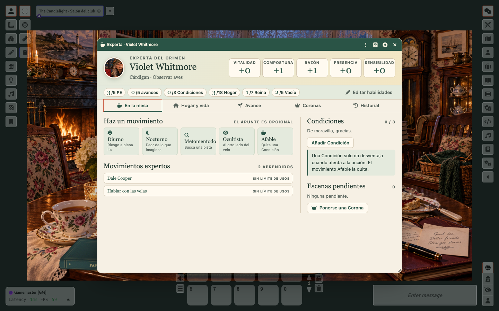
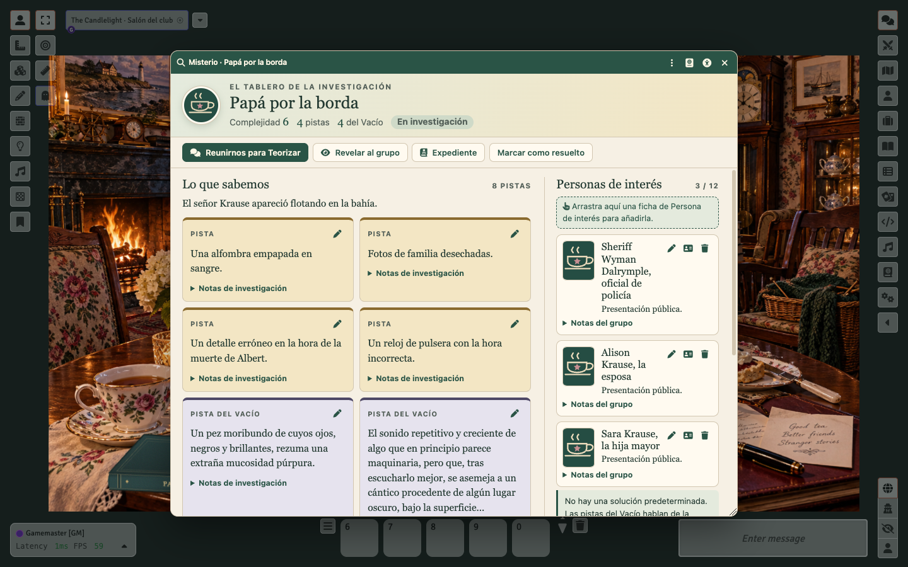
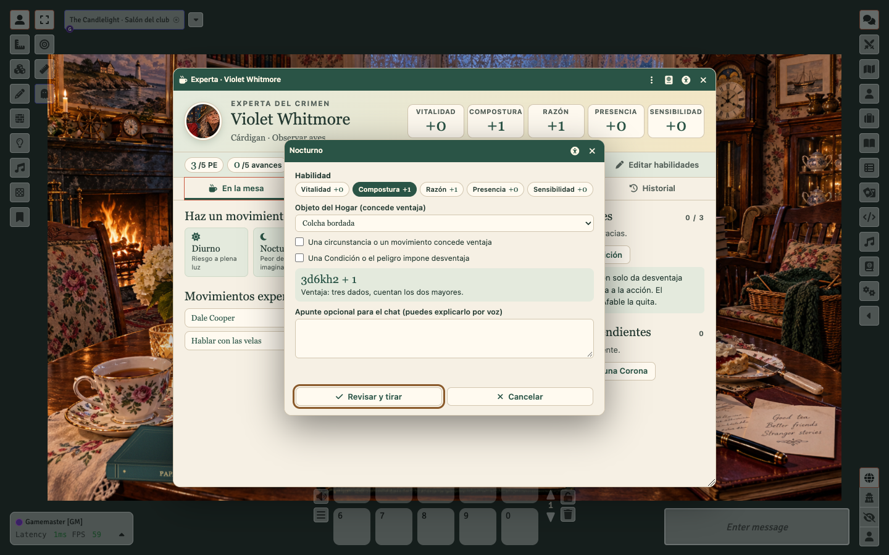

Hay té. Hay pastas. Y algo no encaja. Llevad al club de las Expertas del Crimen a vuestra mesa virtual, con todas las reglas funcionando.
Foundry → Game Systems → Install System → pega el manifiesto:
https://github.com/ManuRomera/brindlewood-bay-foundry/releases/latest/download/system.json
Sin módulos adicionales. Verificado en Foundry 13.351 y preparado para 14.

Misterios activos con sus pistas, el progreso de cada Experta, la conspiración y el ritual de la sesión, en una sola ventana.

Habilidades y límites siempre a la vista, cinco pestañas y los movimientos expertos al alcance de un clic.

Pistas, personas de interés con retrato y notas compartidas del grupo. La Guardiana revela; las jugadoras anotan.

Habilidad, objeto del Hogar y desventajas; ventaja y desventaja se cancelan solas. Ponerse una Corona, a un botón del fallo.
La Corona sube el nivel y reescribe la tarjeta; el Vacío se marca en orden y retira a la Experta.
Usos por sesión, por misterio o únicos, con los efectos de Dale Cooper, Fox Mulder, Frank Dowling y compañía.
Capas a 3, 5, 10 y 15 pistas con aviso privado a la Guardiana al desbloquear cada una.
Expedientes privados, 49 personas de interés y un generador de anuncios con más de un millón de combinaciones.
Icono en cada ventana: perfiles oscuro, alto contraste AAA y ámbar, texto del 85 al 160 % y movimiento reducido.
Las ventanas recuerdan su sitio, los retratos se encuadran y cada jugadora crea su Experta sin permisos especiales.